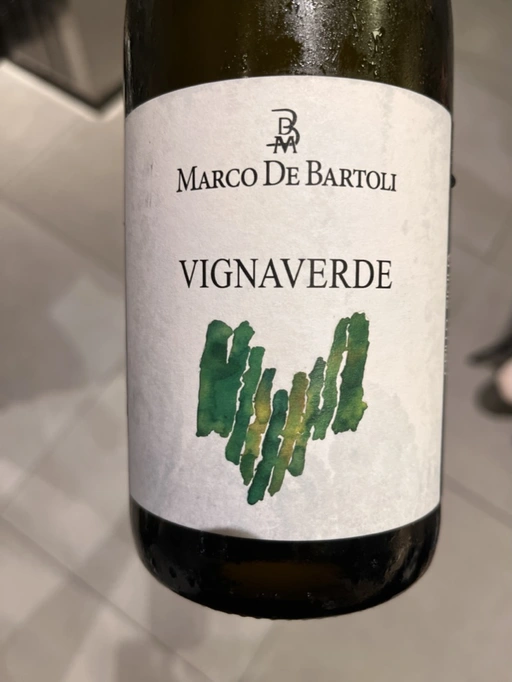
- Type
- White Still, Dry
- Producer
- Marco De Bartoli
- Vintage
- 2019
- Location
- Italy, Sicilia DOC
- Grapes
- Grillo
- Alcohol
- 12.5
- Sugar
- 1
- Price
- 613 UAH, 630 UAH
- Cellar
- N/A
Ratings
2022-08-26 - 8.00
What a great value! Crisp, clean and not simple Grillo. Green fruits, citrus, wet stone and sea. Almost perfectly balanced, fresh and delicious. Bravo.
2022-09-13 - 8.00
Beautiful and tasty as ever. Dried fruits, green fruits, sea, wet stone and notes of acacia honey. Fresh, voluminous, and well-balanced. Crazy-good QPR.
Wine #2 on Mixed Bag Vol. 3.
2022-11-18 - 8.00
Tasted blind and guessed the wine. Good oxidation, honey, baked apples, shells and sea. Round, voluminous and delicious. Great value.
Related
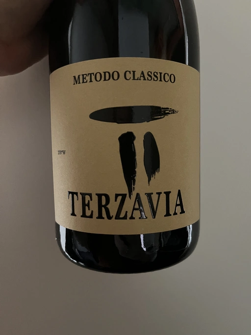
Marco De Bartoli
Terzavia - 2018
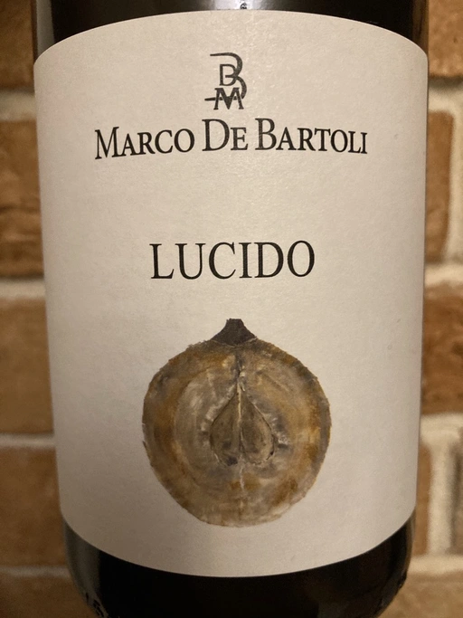
Marco De Bartoli
Lucido - 2019

Marco De Bartoli
Integer Grillo - 2018
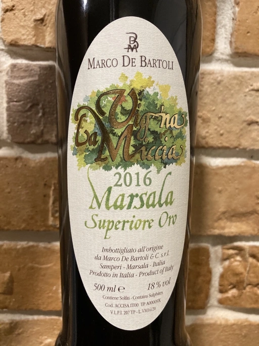
Marco De Bartoli
Vigna La Miccia Marsala Superiore Oro - 2016
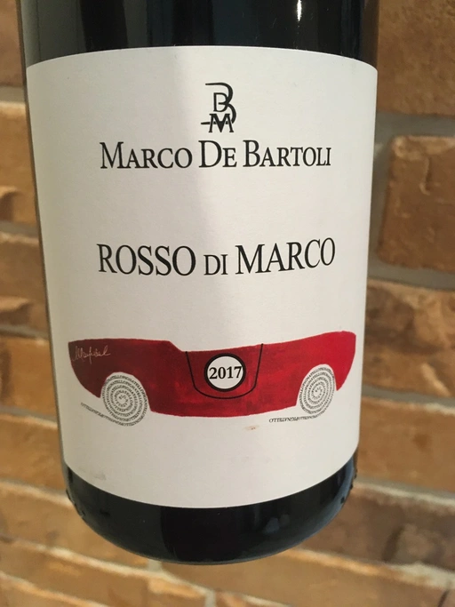
Marco De Bartoli
Rosso di Marco - 2017
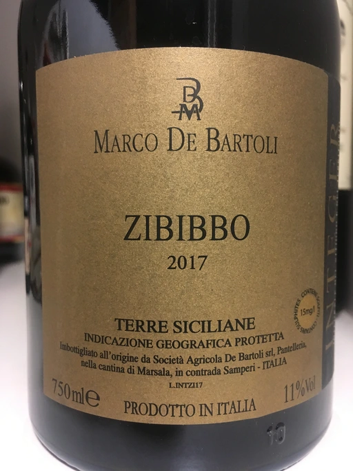
Marco De Bartoli
Integer Zibibbo - 2017
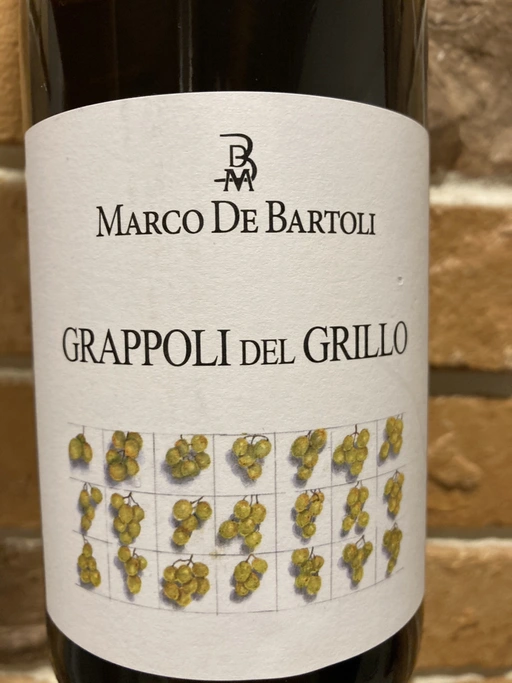
Marco De Bartoli
Grappoli del Grillo - 2018
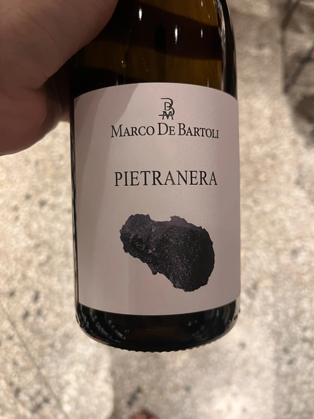
Marco De Bartoli
Pietra Nera - 2020
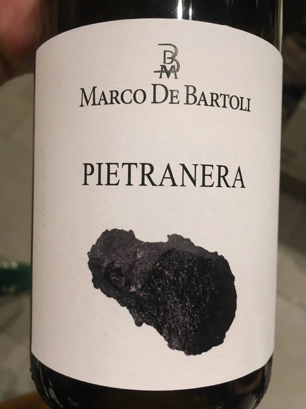
Marco De Bartoli
Pietra Nera - 2018
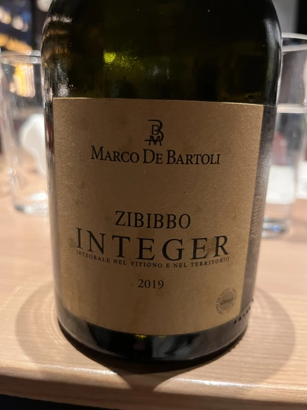
Marco De Bartoli
Integer Zibibbo - 2019
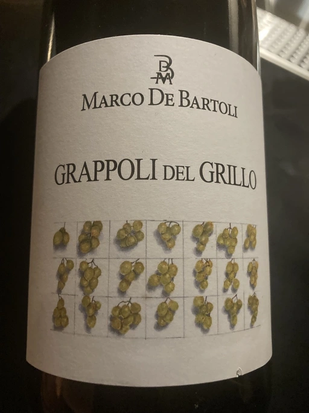
Marco De Bartoli
Grappoli del Grillo - 2019
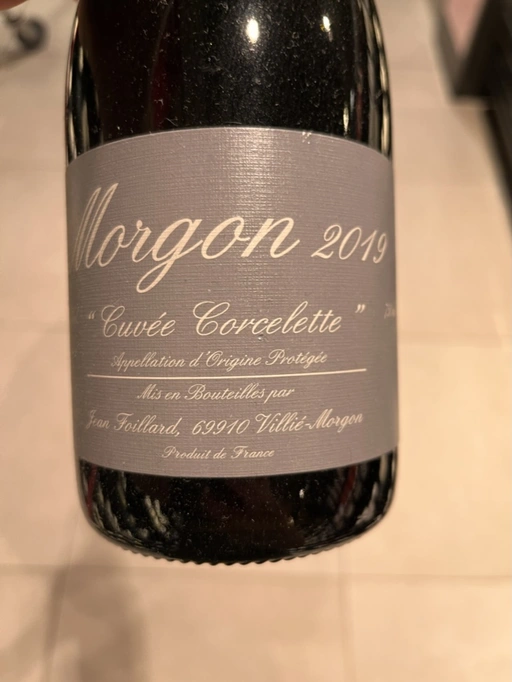
Jean Foillard
Morgon Cuvée Corcelette - 2019
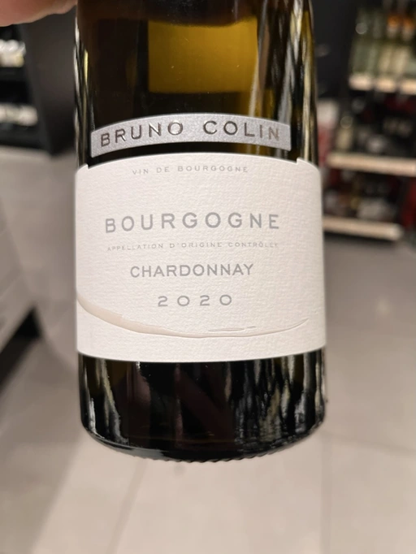
Bruno Colin
Bourgogne Chardonnay - 2020
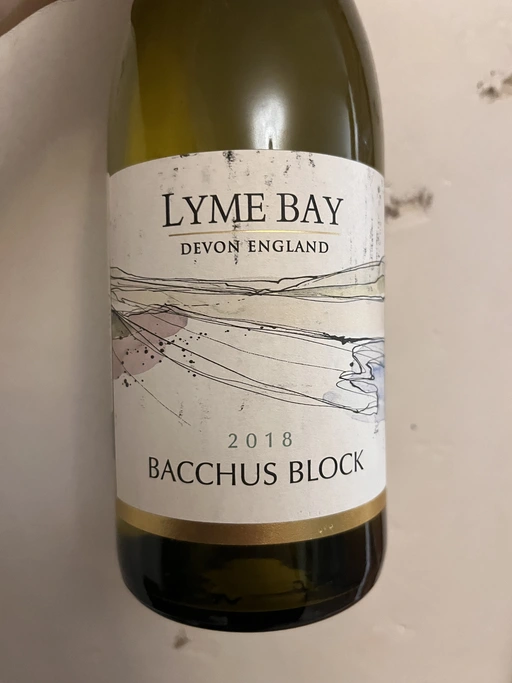
Lyme Bay
Bacchus Block - 2018
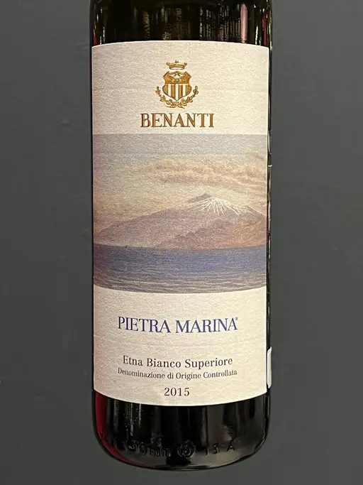
Benanti
Etna Bianco Superiore Pietra Marina - 2015

Domaine de La Borde
Pinot Noir Sous la Roche - 2018
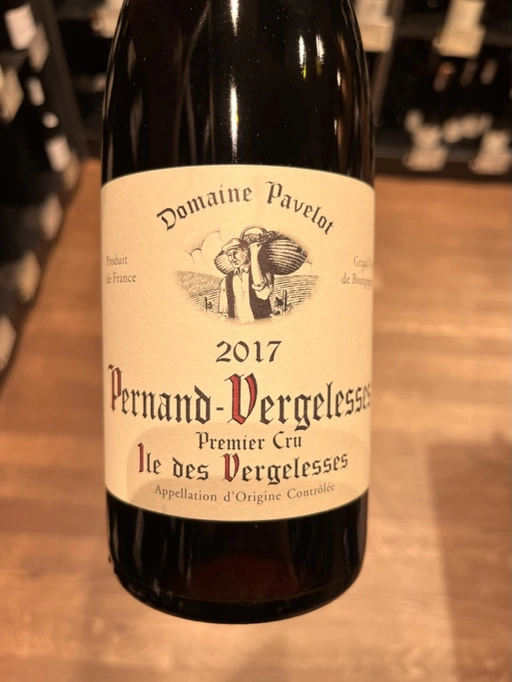
Domaine Pavelot
Pernand-Vergelesses 1er Cru Ile des Vergelesses - 2017

Valentino Butussi
Cabernet Franc - 2018
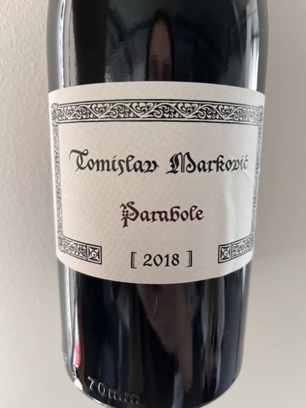
Tomislav Marković
Parabole - 2018

Fattoria San Lorenzo
Vino Rosato di Vera - 2020
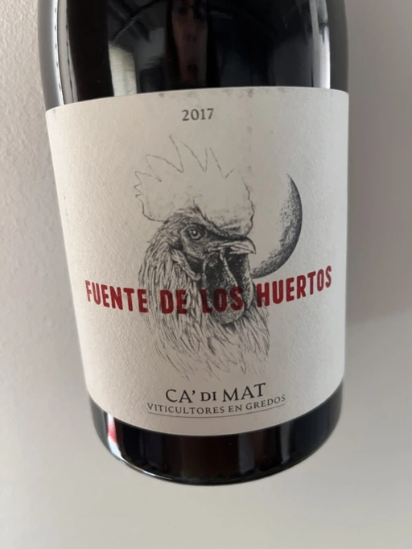
Ca' di Mat
Fuente de los Huertos - 2017
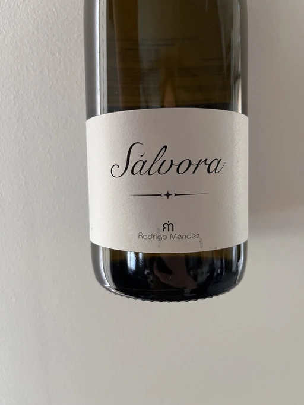
Rodrigo Méndez
Sálvora - 2017
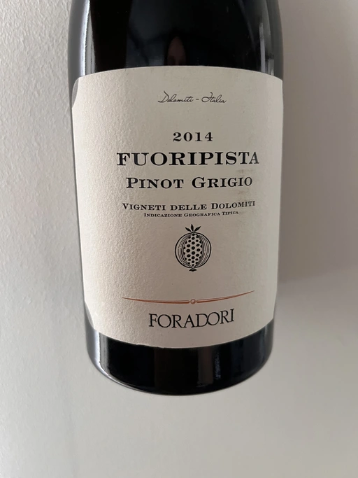
Foradori
Fuoripista Pinot Grigio - 2014

Kmetija Štekar
Rebula Prilo - 2015
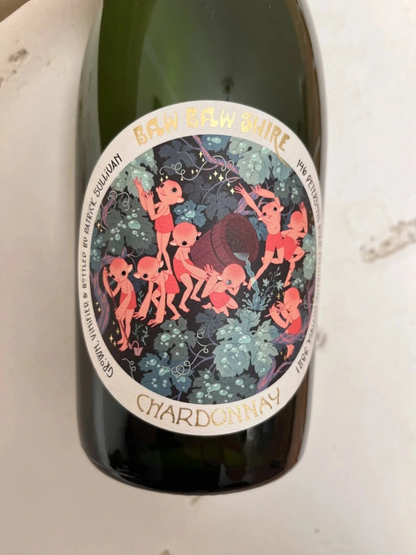
Patrick Sullivan
Baw Baw Shire Chardonnay - 2019
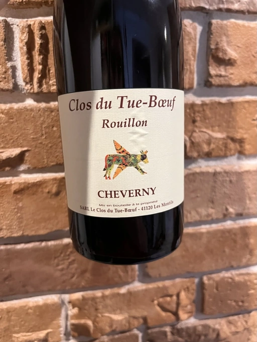
Clos du Tue-Boeuf
Rouillon Cheverny - 2020

COS
Frappato - 2020
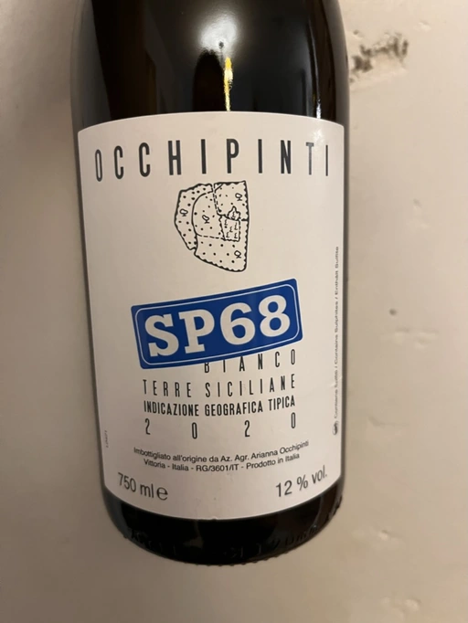
Arianna Occhipinti
SP68 Bianco - 2020